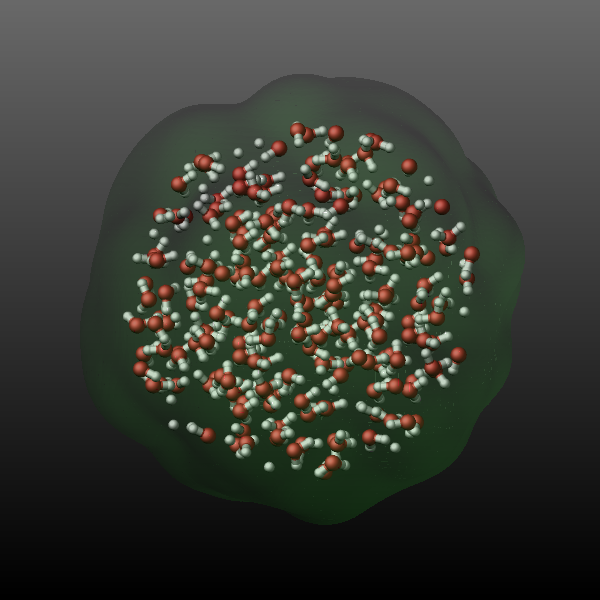
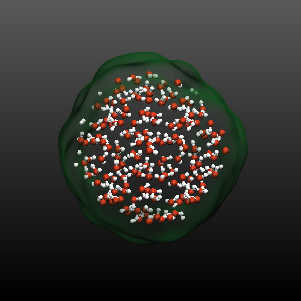
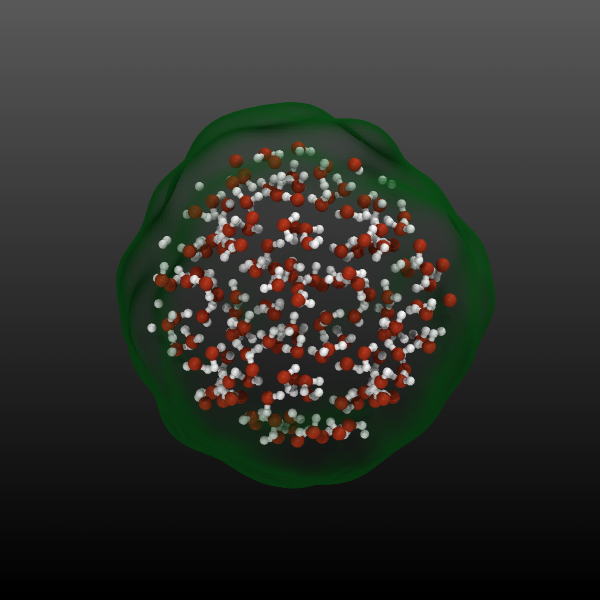

\(\renewcommand{\AA}{\text{Å}}\)
fix graphics/isosurface command
Syntax
fix ID group-ID graphics/isosurface Nevery isovalue radius keyword args ...
ID, group-ID are documented in fix command
graphics/isosurface = style name of this fix command
Nevery = update graphics information every this many time steps
isovalue = isovalue for the particle property isosurface selection
radius = radius describing the spread of the atoms to the density grid (distance units)
one or more keyword/args pairs may be appended
keyword = quality or property or filename or binary or pad
quality keyword = isosurface grid resolution setting keyword = one of min, low, med, high, or max property value = per-atom property used to create the isosurface grid value = none, mass, c_ID, c_ID[i], f_ID, f_ID[i], v_name none = 1.0 for all atoms mass = mass of the atoms c_ID = per-atom vector calculated by a compute with ID c_ID[I] = Ith column of per-atom array calculated by a compute with ID f_ID = per-atom vector calculated by a fix with ID f_ID[I] = Ith column of per-atom array calculated by a fix with ID v_name = per-atom vector calculated by an atom-style variable with name filename name = name pattern for output of a sequence of STL format mesh files (must contain a * character to be replaced by the timestep number) binary logical = select whether to output a binary STL file (default is text mode) pad number = pad the timestep in the output file name with zeroes to have this many digits (default is 0)
Examples
fix sf1 water graphics/isosurface 200 0.1 2.5 quality high property mass
fix stl water graphics/isosurface 200 0.01 1.5 filename water-isosurface-*.stl pad 5
Description
Added in version 11Feb2026.
This fix allows to add an isosurface graphics object representing the triangulated isosurface at a given isovalue on a grid to images rendered with dump image using the fix keyword and optionally to output the computed mesh as a series of STL format files for external processing.
The group-ID sets the group ID of the atoms selected to be represented by the isosurface. This may be a dynamic group.
The Nevery keyword determines how often the isosurface graphics data is updated. This should be the same value as the corresponding N parameter of the dump image command. LAMMPS will stop with an error message if the settings for this fix and the dump command are not compatible.
The isosurface objects will be colored by the atom type that is closest to each isosurface grid cell when the type coloring scheme is used in the dump image fix command. The color is that of the atom type’s element color instead with the element coloring scheme, or just a globally set constant color for the whole isosurface with the const coloring scheme. That color can be set with the fcolor keyword of the dump modify command. For rounded triangles, the color is interpolated across the triangle if there are different colors assigned to the different corners of the triangle.
The isosurface’s transparency setting is fully opaque by default and can be changed with the ftrans keyword of the dump modify command.
The isovalue argument sets the isovalue used to compute the isosurface. The optimum value depends on the property on that is being used and the information that is supposed to be conveyed. It usually requires some experimentation in combination with varying the radius setting.
The radius argument sets the width of the gaussian distribution function used to distribute the per-particle data across the grid. Its value controls the smoothness of the isosurface and - as mentioned above - may need some experimentation in combination with the choice of isovalue to achieve the desired output.
The quality keyword can have any of these words as argument: “min”, “low”, “med”, “high”, or “max”, and selects the grid resolution used for the isosurface. The actual grid dimensions depend on the geometry of the simulation cell.
The optional property keyword controls what property is used to set the values at the grid points for the isosurface. The default setting of none just uses a value of 1.0, resulting in the data grid representing a smoothed out number density. Other possible arguments are mass (for representing the smoothed out mass density) or a references to a compute, a fix, or a reference to an atom-style variable. The compute or fix must produce a per-atom vector or array, not a global or local quantity. In case the property is a per-atom array, the column must be selected.
The optional filename keyword controls whether the computed triangle mesh is exported to an STL format file for use with external visualization programs or 3d-printers. The filename must contain a star character (*) which will be replaced by the timestep number. There is a new file created for every timestep.
If LAMMPS has been compiled with the corresponding setting and if the filename ends with “.gz” or some other supported compression format suffix, the STL file is written in compressed format. A compressed STL file can be \(5-10\times\) smaller than the text version, but may need to be uncompressed before it can be read into a graphics program.
The optional binary keyword controls whether the STL format output file is in ASCII text mode (the default when the keyword is not used or when using “no” or “off” as argument) or in binary mode. Binary STL files are about \(4-5\times\) smaller than the ASCII text version, and can be written and read much faster. Not all programs that handle STL files can read binary files and thus they may be converted to ASCII format. LAMMPS includes the stl_bin2text program for that purpose.
Dump image info
Added in version 11Feb2026.
Fix graphics/isosurface is designed to be used with the fix keyword of dump image. The fix will construct an isosurface based on the atom positions and the selected property of the atoms in the fix group and pass the graphics geometry information about it to dump image so that it is included in the rendered image.
The fflag1 setting of dump image fix determines whether the isosurface will be rendered as a set of connected rounded triangles (1) or as a mesh of cylinders (2).
If using a mesh of cylinders, the fflag2 setting determines the diameter of the cylinders, otherwise it is ignored.
The quality settings of “min” and “low” work best with the cylinder mesh setting while the other quality settings are more suitable for a triangle mesh.
Example for using STL output in VMD
Below is an example input commands showcasing the use of the graphics/isosurface fix and exporting STL files. They are added to a simulation of a bulk SPC/E water system with 1350 water molecules.
region center sphere 10.0 10.0 10.0 10.0 units box
group sphere dynamic all region center
compute prop all property/atom mass
fix surf sphere graphics/isosurface 10 2.0 2.0 quality high property c_prop filename sphere-*.stl pad 5
dump viz sphere image 10 sphere-lammps-*.png type type size 600 600 zoom 1.6 shiny 0.4 fsaa yes &
view 70 -20 box no 0.025 fsaa yes bond atom 0.5 fix surf const 1 0.2
dump_modify viz pad 5 backcolor2 gray adiam 1 2.432 adiam 2 1.92 &
acolor 1 firebrick acolor 2 silver fcolor surf forestgreen ftrans surf 0.25
dump xyz sphere xyz 10 sphere.xyz
dump_modify xyz element O H
With the following script (use vmd -e -eofexit vizsphere.vmd to run
the script) the first frame of the trajectory of those selected atoms
and the corresponding STL file are then loaded into VMD via VMD/Tcl script commands
and then rendered with both OpenGL (which is what you see on the
screen) and then also with the Tachyon ray tracing program included with VMD. The
following images compare the LAMMPS output with the VMD OpenGL output
and the Tachyon ray tracer (from left to right).
display projection Orthographic
display depthcue off
display backgroundgradient on
display shadows on
display ambientocclusion on
display aoambient 0.800000
display aodirect 0.300000
display resize 600 600
mol new sphere.xyz type xyz first 0 last 0 step 1 autobonds 1 waitfor all
mol delrep 0 top
mol representation VDW 0.300000 12.000000
mol color Name
mol selection {all}
mol material AOShiny
mol addrep top
mol representation DynamicBonds 1.000000 0.200000 12.000000
mol color Name
mol selection {all}
mol material AOShiny
mol addrep top
graphics top delete all
graphics top color green
graphics top material BlownGlass
mol addfile sphere-00000.stl type stl waitfor all
render snapshot vmdscene.tga convert %s sphere-opengl.png
render TachyonInternal vmdscene.tga convert %s sphere-raytrace.png
rm vmdscene.tga
  
{kind=link}
{kind=link}
{kind=link}
Restart, fix_modify, output, run start/stop, minimize info
No information about this fix is written to binary restart files.
None of the fix_modify options apply to this fix.
Restrictions
This fix is part of the GRAPHICS package. It is only enabled if LAMMPS was built with that package. See the Build package page for more info.
Defaults
quality = low, property = none, binary = no, pad = 0, filename = none